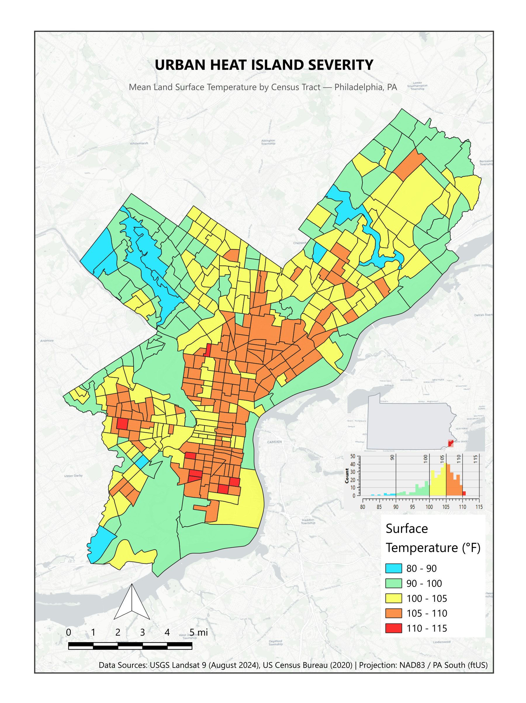
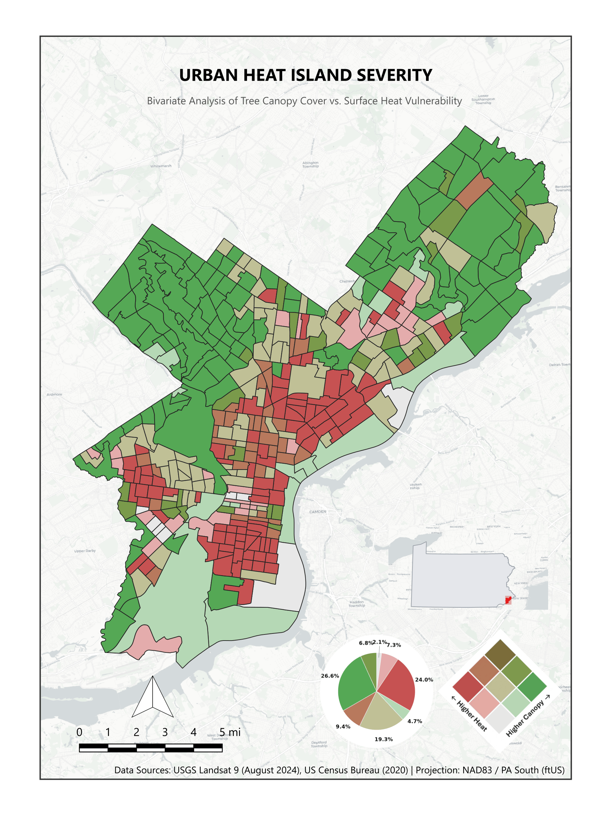
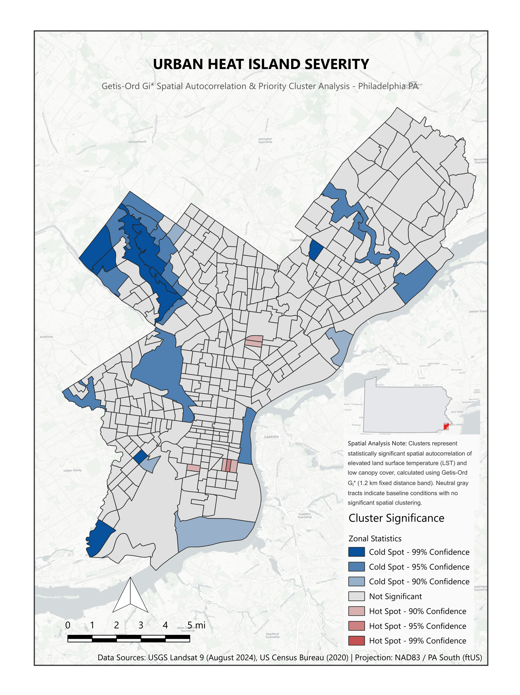

Urban heat isn't distributed evenly across a city — it tracks closely with land cover, and tree canopy in particular. Tracts with little canopy and heavy impervious surface absorb and re-radiate far more heat than tracts with mature tree cover, and in Philadelphia those two conditions map onto neighborhoods that were already carrying other environmental and economic burdens.
This project evaluates microclimate vulnerability, tree canopy deficit, and thermal risk priority clusters across Philadelphia's census tracts in three stages: a citywide land surface temperature overview, a bivariate classification of heat against canopy, and a Getis-Ord Gi* hot spot analysis that isolates statistically significant clustering from baseline citywide noise.
Mean land surface temperature (LST) ranges from roughly 80°F to 115°F across Philadelphia's census tracts. The hottest tracts — 105°F to 115°F — are densely concentrated across North Philadelphia, the Lower Northeast, and central industrial corridors. Temperatures below 90°F are strictly confined to major contiguous green infrastructure, most notably Wissahickon Valley Park, Pennypack Park, and the Fairmount Park system.

A 3×3 bivariate classification evaluates the direct relationship between LST and tree canopy percentage across all census tracts. 24.0% of tracts fall into the highest vulnerability classification — high heat, low canopy — forming a broad, contiguous band across North and South Philadelphia. At the other end, 26.6% of tracts represent urban cool refuges (low heat, high canopy), heavily concentrated in Northwest Philadelphia and the Far Northeast. The remaining tracts fall along the spectrum between those extremes, including moderate heat with low canopy (19.3%) and moderate heat with moderate canopy (9.4%).

Using Getis-Ord Gi* spatial statistics with a 1.2 km fixed distance band, the analysis isolates statistically significant neighborhood-scale clustering from baseline urban noise. Significant hot spot clusters (90%–95% confidence) emerge directly within North Philadelphia, centered near Hunting Park and Kensington, along with isolated South Philadelphia industrial and commercial tracts — high-priority targets where low canopy directly couples with regional heat aggregation. Significant cold spot clusters (90%–99% confidence) map closely to regional parklands, including the Wissahickon Creek corridor, Pennypack Park, and the John Heinz National Wildlife Refuge area in the Southwest. The vast majority of tracts show no statistically significant spatial autocorrelation, confirming that severe thermal vulnerability is concentrated in specific, actionable corridors rather than spread uniformly citywide.

Nearly a quarter of Philadelphia's census tracts sit in the critical-risk zone where high heat and low canopy overlap, and that overlap isn't scattered — it forms a contiguous band across North and South Philadelphia that also emerges as statistically significant hot spot clustering under Getis-Ord Gi*. The cool-refuge tracts follow the opposite pattern, concentrated wherever the city's major parks and Northwest tree cover sit. The consistency across all three analyses — raw temperature, bivariate classification, and spatial statistics — points to the same corridors as priorities for canopy investment.